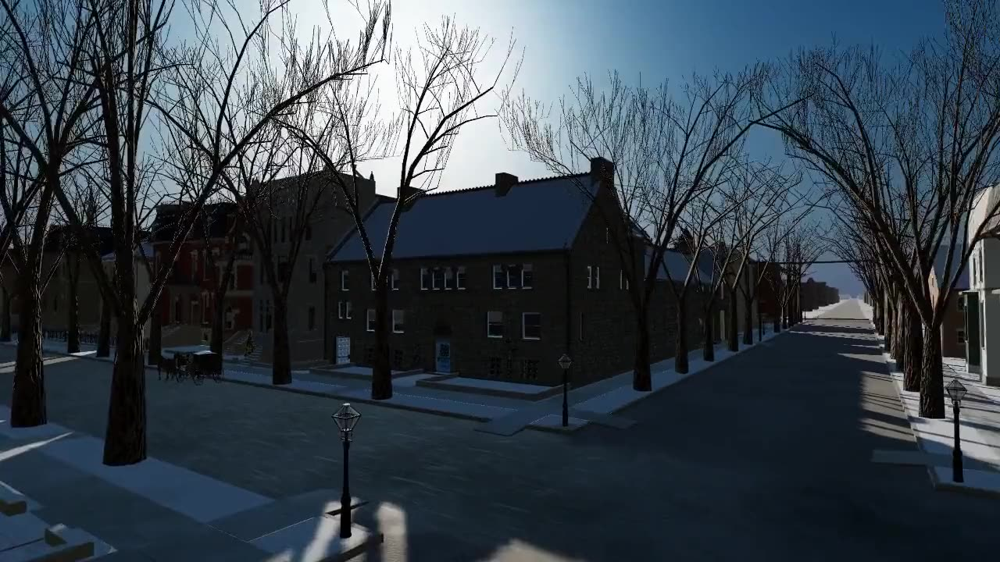
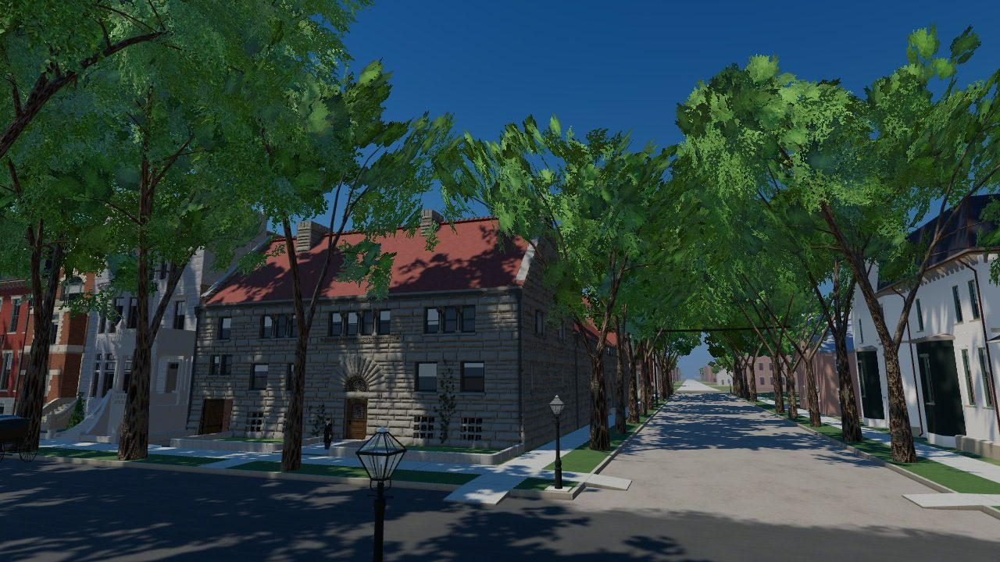
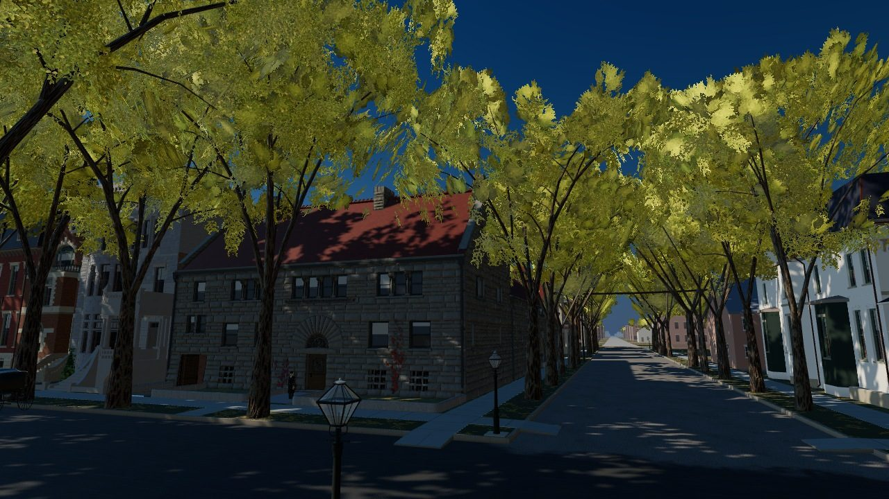
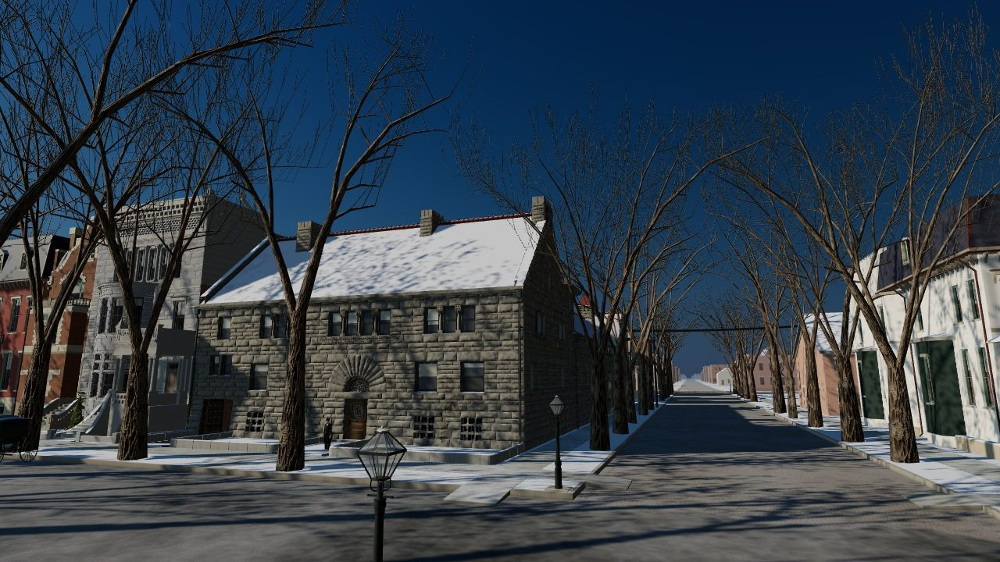
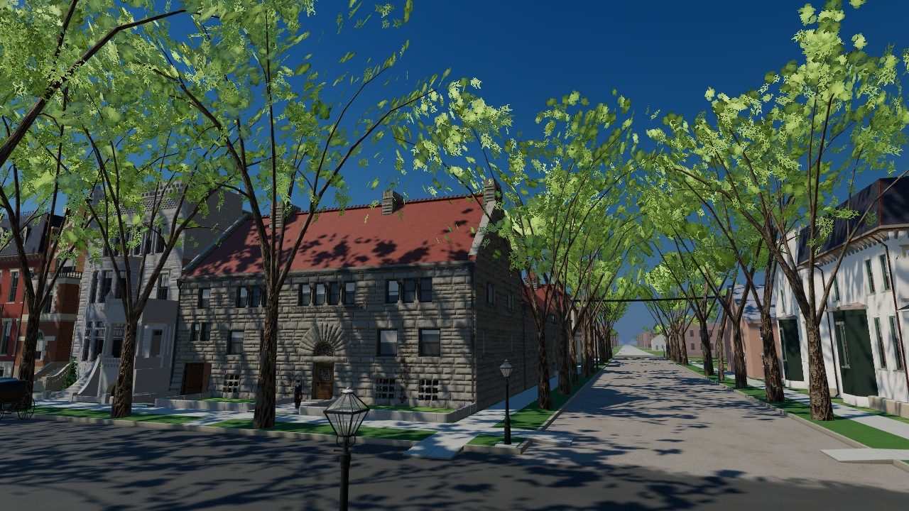
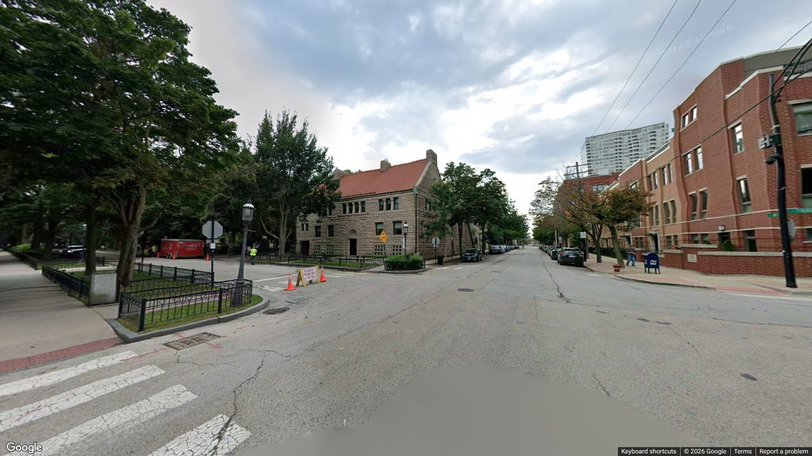

Birds and insects
Robins in the 1904 elms, cicadas in high summer, crickets into the fall evenings, and the 1812 prairie's own seasonal chorus.

Pick the hour and the season and the whole town answers. The sun moves, lamps and windows light at dusk, the elms turn and drop their leaves, snow settles on the roofs, and the sounds of the place change with them.




Same camera · four seasonsTrees, gardens, lawns, ivy on the walls and the crops of 1812 all follow the season you choose. Jaunts set their own: the Glessner household tour is a spring morning, the ghosts walk at night. Time of day runs from daybreak to night, with the sun where it stood on that date.
 1812 · winter
1812 · winter 1835 · dusk
1835 · dusk 1904 · dusk
1904 · duskRecorded sound for every era, mixed by where you stand.
Robins in the 1904 elms, cicadas in high summer, crickets into the fall evenings, and the 1812 prairie's own seasonal chorus.
The wind you hear follows the gusts that sway the branches you see.
Horses, carriages and wagons are heard as they pass, nearest first.
A ten-track ragtime playlist on shuffle for Prairie Avenue, with its own volume and mute.
Open the Today window and Google Street View shows where you are standing as it looks now, turning as you turn and walking as you walk. Window mode does the opposite: look into the past from where you stand.
 1904 · in 4D Chicago
1904 · in 4D Chicago
Today · Google Street View 1812 · VR ready
1812 · VR readyVR mode opens the town in a WebXR headset at full scale. The same app runs on a laptop with built-in graphics and on a phone: it reads the device as it loads and picks the detail that fits, and it never drops the people, horses or carriages to get there. A lower resolution goes first.
Runs in your browser on a computer, a phone or a VR headset. Sign in once and every year is open.